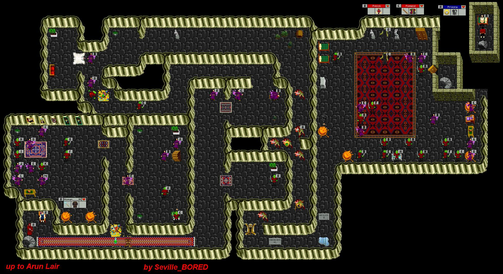

| Arun Secret | |||||||||
 |
|||||||||
| After coming down the stairs from behind Arun's Lair, find a Key that randomly drops here to open the door beyond Pokick and Pomend's Lair. Kill Pokick and Pomend to get their bracers and then climb the stairs to trade for a ring to trade back to the NPC at the stairs where you came down from Arun. | |||||||||
| To Arun Lair | |||||||||